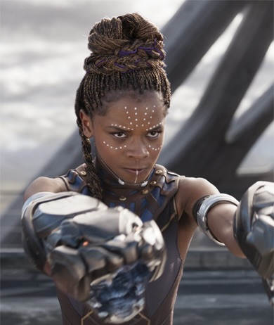
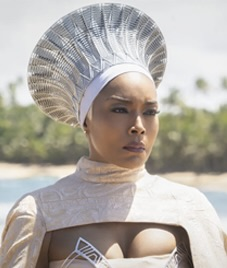
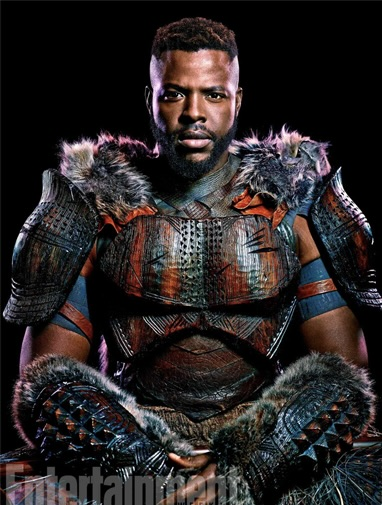
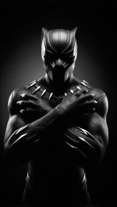
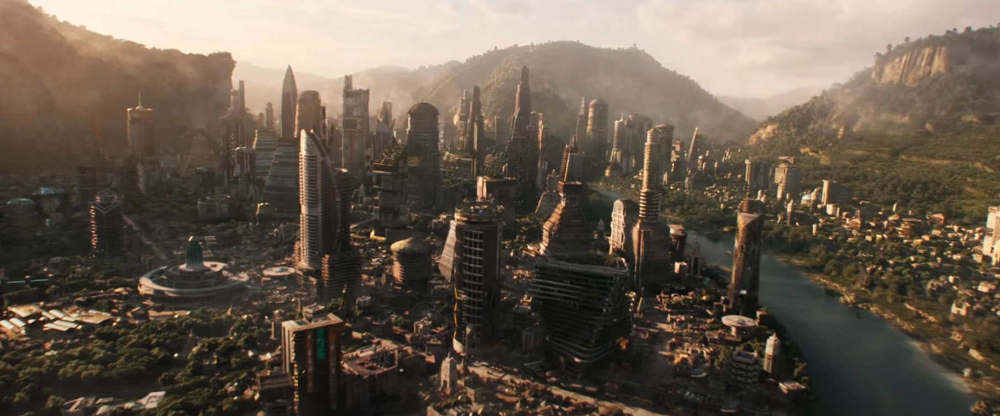

KEY CHARACTERS

T'Challa / Chadwick Boseman

Shuri / Letitia Wright

Ramonda / Angela Bassett

M'Baku / Winston Duke
Black Panther is a 2018 American superhero film based on the Marvel Comics character T'Challa: Black Panther. It was produced by Marvel Studios and distributed by Walt Disney Studios Motion Pictures. It is the 18th film in the Marvel Cinematic Universe (MCU). The film was directed by Ryan Coogler from a screenplay he wrote with Joe Robert Cole.

Letitia Wright plays Shuri, the princess of Wakanda who designs new technology for the nation. Her primary inventions include:
Kinetic Energy Suits: The Black Panther suits that absorb kinetic impact in combat and redistribute it as a powerful shockwave.
Sonic Gauntlets: Paw-shaped wearable blasters equipped with tiny vibranium specks that fire concentrated sonic blasts.
Kimoyo Beads: Versatile, traditional-looking bead bracelets that double as high-tech communication devices, medical databases, hologram projectors, and recording tools.
Vibranium Maglev Trains: High-speed magnetic levitation trains that run through underground vibranium mines and transit systems.
Light-Based UIs & Holographic Interfaces: Gesture-controlled computer and laboratory systems that track hand movements to code, analyze data, and build formulas in real time.
Assistive Technologies: Upgraded mobility and medical gear for disabled individuals.
T'Challa / Chadwick Boseman

Shuri / Letitia Wright

Ramonda / Angela Bassett

M'Baku / Winston Duke

Cole called the film an historic opportunity to depict a Black superhero "at a time when African-Americans are affirming their identities while dealing with vilification and dehumanization". It was important to root the film in the actual cultures of Africa, with the filmmakers consulting with experts on the region of Africa that Wakanda is supposed to be located in, rooting the film "in reality first and then build[ing] out from there". Coogler's vision for Wakanda was inspired by the southern African country Lesotho, a country which has historically been "an enclave, able to protect its independence because of its terrain" and was only lightly colonized by the British; the country's traditional blankets are also featured in the film. Coogler compared the rarity of vibranium existing only in Wakanda to the real-life mineral coltan that can almost only be found in Congo. He wanted Wakanda to feel like a full country with multiple distinct tribes, and created a project bible that detailed each Wakandan tribe to guide the design process. Special care was taken to create a futuristic look that was not alien, as some of Jack Kirby's original comic designs appear.